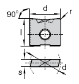
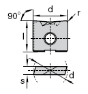

|
4.5 Frezeleme Takýmlarýnda Mikro Geometriler:
Modern frezeleme çok evrensel bir iþleme metodudur. Son birkaç yýl boyunca, takým tezgâhlarýnýn geliþimiyle birlikte frezelemede çok geniþ bir aralýktaki þekilleri iþleyen bir metoda dönüþmüþtür. Günümüzde çok eksenli tezgâhlardaki iþleme metod seçenekleri artýk basit deðildir. Frezeleme prensip olarak dönen, çok kesme kenarlý takýmla yapýlan metal kesme ve alaþýmlarý kesme iþlemidir [4]. Bu takým, bir iþ parçasýna yapýlan doðru hemen hemen her yönde programlanmýþ ilerleme hareketini yapabilir. Frezeleme iþlemini verimli hale getirmek için geliþtirilen mikro geometrik yapýlar, ucun talaþ kaldýrýrken en verimli olduðu deðerlerde tasarlanmýþtýrlar. Özellikle finiþ operasyonlarýnda hassas yüzeyler elde etmek için bir çok geometri geliþtirilmiþ olup bunlarýn arasýnda yüzey formlarýna göre en iyisi seçilmiþtir.
  
Þekil 4.8 Finiþ Operasyonlarýnda Tercih Edilen Yüksek Ýlerleme Takýmlarý (60 HRC sertliðe kadar) [2]
Küresel uçlarda genelde bir problem olarak görülen, düzlemsel yüzeylerde býraktýðý izler geliþtirilen yeni küresel uçlarla bu problem de ortadan kaldýrýlmýþtýr. Bu þekilde formlu yüzeylerden, düzlemsel yüzeylere geçerken yine ayný kesici uçla tek operasyonda iþlemimizi bitirebilmekteyiz.
Þekil 4.9 "R-1" Geometriye Sahip Küresel Uç [2]
Tablo 2. Frezelemede Karþýlaþýlan Problemler ve Çözümleri [2]
Sonuç:
Günümüzde yeni geliþen teknolojiye paralel olarak birçok farklý geometriye sahip uçlar bulmak mümkün olduðu gibi, geliþtirilen bu geometriler müþterilerin taleplerine göre dizayn edilmektedir. Her ne kadar uçlar bir takým testlerden geçseler de bazen gerçek uygulamada ayný verimi alamayabiliyorsunuz. Bunun birçok nedeni olabildiði gibi en temel nedenlerin biride tutucunun titreþimsiz bir þekilde çalýþmasýný saðlamak, mümkün olduðu kadar kesici ucu boþta dolandýrmamaktýr.
Uç seçiminde diðer bir kriter de, iþlediðimiz materyalin fiziksel ve kimyasal özelliklerini iyi bilmek gerekir. Mesela elmas karbürle çelik iþlediðiniz zaman ucun çok kýsa bir süre içinde özelliðini yitirdiðini görürsünüz. Bunun nedeni çok yoðun bir þekilde difüzyon oluþmasýdýr.
Bu nedenle kesici uç seçimi yaparken uçlarýn sadece sahip olduklarý geometrileri ile deðil, kaplamasý, kullanýlan malzemesi, baðlama tipi, o uç için önerilen tutucularýn geometrik yapýsý, iþlenilen materyalin özellikleri, kullanýlan tezgâha hâkimiyet, kullanýlan soðutma sývýsý, kullanýlan CAM programý, tersine mühendislikle taranan parçalarýn yüzey hassasiyeti( Özellikle dikkat edilmesi gereken bir husustur. Taranan parçanýn hassasiyeti ile CAM programýndaki iþleme toleransý arasýndaki 0,01'lik bir deðiþimin bile yüzeyde nasýl etkiler yarattýðý Fardizayn Tasarým Teknopark Þirketi'nde Ar-Ge çalýþmalarý kapsamýnda incelenmiþtir.) iþleme operasyonlarý gibi daha birçok etken, uç tercih ederken dikkat edilmesi gereken hususlar arasýnda deðerlendirilmelidir.
Kaynaklar:
1) ÖZTÜRK O., Böhler Sert Maden ve Takým Sanayi ve Tic. Aþ. Teknik Pazarlama Sorumlusu, Kasým2007, Röportaj
2) Böhler Sert Maden ve Takým Sanayi Tic. A..Þ. resmi internet sitesi, www.bohler.com.tr, 2007
3) www.kalip.net, 2007
4) www.coromant.sandvik.com/tr, 2007
5) Güvenal Makina Takma Uçlu Takýmlar Katalog Bilgileri, 2007
6) Fardizayn Tasarým Teknopark Tic. Ltd. Þti. / Ar-Ge uygulamalarý, 2007
|